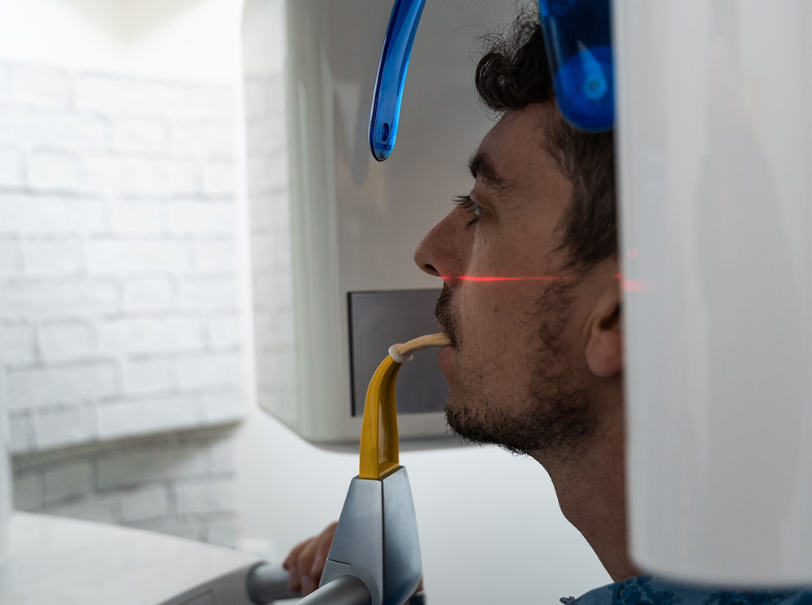

Un sorriso più armonico, senza effetto forzato
Il punto non è cambiare identità, ma migliorare proporzioni, colore e naturalezza quando il caso lo consente.
Faccette dentali a Volta Mantovana
Le faccette dentali possono migliorare forma, colore e armonia del sorriso nei casi indicati. Al Poliambulatorio Voltese partiamo da diagnosi, ascolto e pianificazione: niente promesse facili, solo un percorso chiaro per capire se questa soluzione è adatta a te.
Perché una valutazione prima di decidere
In estetica dentale la scorciatoia più costosa è decidere troppo presto. Una visita ben fatta aumenta chiarezza, riduce dubbi e ti permette di valutare possibilità, limiti e alternative con maggiore serenità.
Il punto non è cambiare identità, ma migliorare proporzioni, colore e naturalezza quando il caso lo consente.
Gengive, smalto, occlusione e aspettative vanno valutati prima di parlare di faccette.
Capisci passaggi, controlli e indicazioni, senza dover prendere decisioni al buio.
La valutazione serve anche a capire quando sbiancamento, ortodonzia o altre soluzioni sono più indicate.
Indicazioni cliniche
Possono essere valutate in presenza di discromie, lievi irregolarità di forma, denti consumati, piccoli spazi o proporzioni non armoniche. Prima, però, serve verificare salute gengivale, quantità di smalto, masticazione e stabilità del risultato desiderato.

Percorso estetico
Un percorso prudente, chiaro e personalizzato, orientato alla valutazione clinica prima della scelta terapeutica.
Si chiarisce cosa vorresti migliorare e quali risultati consideri naturali, realistici e desiderabili.
Si controllano smalto, gengive, occlusione, abitudini e condizioni che possono influenzare la scelta.
Se le faccette sono indicate, viene spiegato il percorso; se non lo sono, si valutano soluzioni più adatte.
Quando fermarsi prima
Se ci sono infiammazioni gengivali, carie, bruxismo non controllato, importanti malposizioni o aspettative non compatibili con la situazione clinica, la priorità può essere un percorso diverso dalle faccette.
Estetica e salute orale devono procedere insieme: una base clinica stabile è essenziale.
Forma, colore e simmetria vengono valutati rispetto al viso e al sorriso, non come modello standard.
Prima di iniziare devi sapere cosa è realistico aspettarti e quali alternative esistono.
FAQ faccette
Risposte chiare, senza promesse assolute: il caso va sempre valutato in studio.
No. Dipende da salute orale, smalto disponibile, occlusione, abitudini come il bruxismo e risultato desiderato. La valutazione serve proprio a capirlo.
Non necessariamente. Possono essere considerate anche per discromie, forma, proporzioni o piccoli spazi, ma esistono casi in cui altre soluzioni sono più conservative.
Dopo la visita è possibile ricevere indicazioni più concrete. Senza valutazione clinica sarebbe poco serio parlare di tempi o idoneità.
Dipende dalla tecnica e dal caso. Proprio per questo il percorso deve includere spiegazione delle alternative, dei passaggi e degli aspetti da considerare prima di decidere.
Valutazione estetica
Il modo più serio per iniziare è una valutazione: guardare il caso, ascoltare il tuo obiettivo, spiegare possibilità e limiti, poi decidere con calma se procedere.
Viale Risorgimento, 57
46049 Volta Mantovana (MN)
Telefono: 0376 838075
Email: info@poliambulatoriovoltese.com
Orari: Lun 09-19 · Mar 10-15 · Mer 09-19 · Ven 15-19 · Sab 09-16